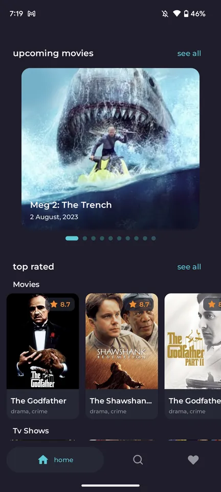
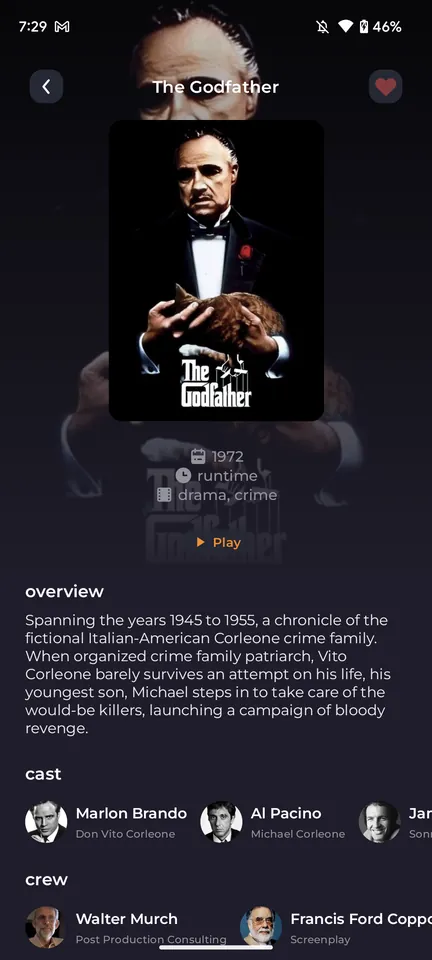
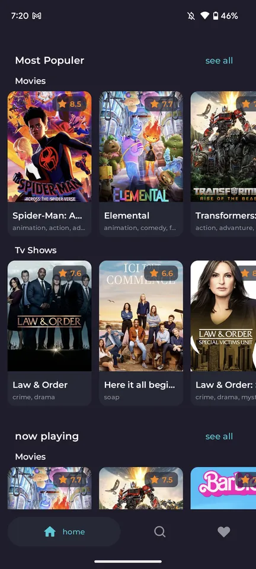
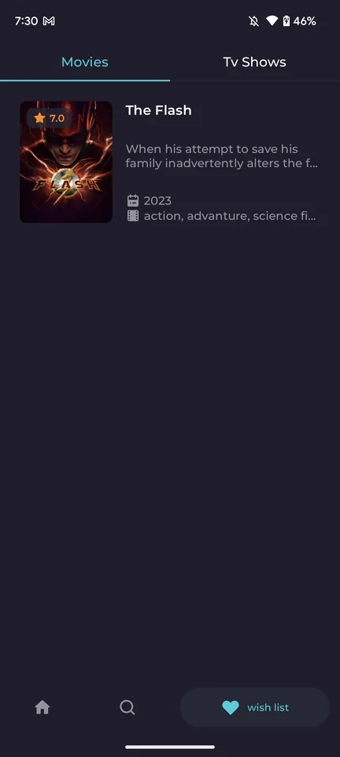

Built-in ad blocker
AdGuard and EasyPrivacy filter lists with a native ad-block engine stop ads, pop-ups, redirects and crypto-miners.
NoFlix is a free, open-source movie and TV series app with a built-in ad blocker. No ads, no pop-ups, no trackers and no sign-up. Just pick a title and press Play.
Android 8.0+ · Apache 2.0 license · Updated automatically on every release


Everything you need to find something to watch, and nothing you don't.
AdGuard and EasyPrivacy filter lists with a native ad-block engine stop ads, pop-ups, redirects and crypto-miners.
Trending, popular, top-rated, now playing and upcoming lists, powered by The Movie Database (TMDB).
One tap on Play opens the video in landscape full screen. The rest of the app stays in portrait.
Find any movie or TV show by title in seconds.
Save movies and series to watch later, all kept on your device.
No account, no sign-up and no analytics. Lists are cached so you can browse offline.
A clean, modern interface built with Jetpack Compose and Material 3.


NoFlix isn't on the Play Store. Install the signed APK from GitHub in under a minute.
Quick answers about NoFlix.
Yes. NoFlix is completely free and open source under the Apache 2.0 license, with no ads or in-app purchases.
Install NoFlix, search for a movie or TV show and tap Play. The built-in ad blocker filters every request the player makes, so ads and pop-ups never load.
No. NoFlix works without sign-up or login.
No. Download the APK from GitHub Releases.
No. NoFlix does not host, upload or store any video files. Movie and TV information comes from the TMDB API.
NoFlix does not host, upload or store any video files. Movie and TV metadata comes from the TMDB API, and playback loads publicly available third-party web pages. This product uses the TMDB API but is not endorsed or certified by TMDB. You are responsible for complying with the laws in your country.